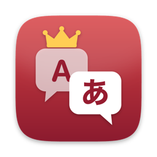

Translate whole mods at once
Add a single file, a localisation folder or an entire mod — or drag and drop it. Queue several mods; pause, resume, or stop and continue next time.

Paradox Localization TranslatorFor Paradox grand strategy mods
A free desktop tool for modders and players. It translates mod localisation files for Crusader Kings III, Victoria 3, Hearts of Iron IV, Stellaris, Europa Universalis IV and V, and Imperator: Rome into any of the 11 languages the games support, keeps the game's formatting codes intact, and helps you find and fix what is still untranslated. The app itself is available in the same 11 languages.
Windows · macOS · Linux — no Python needed
l_english:
trait_brave_desc:0 "[ROOT.Char.GetFirstName] fears nothing. §Y+2 Prowess§!"l_japanese:
trait_brave_desc:0 "[ROOT.Char.GetFirstName]は何も恐れない。§Y武勇 +2§!"Add a single file, a localisation folder or an entire mod — or drag and drop it. Queue several mods; pause, resume, or stop and continue next time.
Formatting codes such as [ROOT.Char.GetName], $VALUE$, £gold£ and §Y…§! are protected during translation and restored afterwards, so the game text does not break.
Finds lines that were left untranslated and translates only those. Each job keeps its own cache: when a mod updates, lines that were already translated are reused, so only new or changed lines go to the AI.
Checks whether another mod already translates a mod into your language, and whether that translation is complete. Missing lines can be added to the translation mod instead of the original — with a backup and a confirmation first.
Compare source and translation side by side, run quality checks, search and fix any line directly, and keep a glossary for each language — or build one automatically — so names and terms stay consistent.
Run a local model with Ollama or LM Studio — free and private — or use OpenAI, Anthropic, Google Gemini or any OpenAI-compatible API. API keys are never saved to settings, profiles or logs.
The tool can translate into all 11 official languages. Each game only reads some of them; if you choose a language the game cannot display, the tool warns you before it starts. Automatic mod detection covers Crusader Kings III, Victoria 3, Hearts of Iron IV, Stellaris and Europa Universalis V; for Europa Universalis IV and Imperator: Rome, add the files or folders yourself.
| Game | EN | JA | FR | DE | ES | KO | PL | PT | RU | ZH | TR |
|---|---|---|---|---|---|---|---|---|---|---|---|
| Victoria 3all 11 | ✓ | ✓ | ✓ | ✓ | ✓ | ✓ | ✓ | ✓ | ✓ | ✓ | ✓ |
| Europa Universalis V (EU5)all 11 | ✓ | ✓ | ✓ | ✓ | ✓ | ✓ | ✓ | ✓ | ✓ | ✓ | ✓ |
| Hearts of Iron IV (HOI4)10 languages | ✓ | ✓ | ✓ | ✓ | ✓ | ✓ | ✓ | ✓ | ✓ | ✓ | – |
| Stellaris10 languages | ✓ | ✓ | ✓ | ✓ | ✓ | ✓ | ✓ | ✓ | ✓ | ✓ | – |
| Crusader Kings III (CK3)9 languages | ✓ | ✓ | ✓ | ✓ | ✓ | ✓ | ✓ | – | ✓ | ✓ | – |
| Imperator: Rome6 languages | ✓ | – | ✓ | ✓ | ✓ | – | – | – | ✓ | ✓ | – |
| Europa Universalis IV (EU4)4 languages | ✓ | – | ✓ | ✓ | ✓ | – | – | – | – | – | – |
✓ = the game can display this language
Start Ollama or LM Studio and load a model — or have an API key ready for a cloud service.
Pick the file for your system from the latest release.
In “Models”, select the provider and the model.
Add a file, folder or mod (drag and drop works), choose the target language, and press “Start translation”.
Review the result in “QA / Compare”, then write the finished translation into the mod. A backup is made first.
Ollama or LM Studio, and a model that writes your target language well (for example Qwen or Gemma models).
An API key for OpenAI, Anthropic, Google Gemini, or an OpenAI-compatible service. Usage is billed by that service, not by this tool.
If you share a translation made with this tool on Steam Workshop or elsewhere, please:
Donations go through GitHub Sponsors and are received by VF Software Co., Ltd. They support the development time and costs of all of our work, including this tool. Every feature stays free for everyone, and donating does not unlock anything.
Sponsor on GitHub ♥Yes. Every feature is free for everyone, under the MIT License. There is no paid version.
Yes. Translation, repair, QA, search, glossaries (including automatic building), the mod survey, translation-mod detection and update-only translation work for all 11 target languages, and the interface is available in all 11 as well. A few limits: with English as the target, outside translation mods are not matched, because most mods already contain English; linking translation mods in languages other than Japanese has been tested less, so check the linked mod before overwriting; Chinese-based translation is available for Japanese and Korean.
Go to Settings → “Display language”. The change takes effect after you restart the app. The first time, the app follows your system language (English if your language is not one of the 11).
The app is not signed by Apple. Open System Settings → Privacy & Security and allow it to open.
The app is not code-signed. Download it only from the official GitHub Releases page, then choose “More info” → “Run anyway”.
Yes, but a Workshop update can overwrite your changes. The tool keeps backups; for important work, keep a copy of the translation.
Open an issue on GitHub. If you can, attach the diagnostic ZIP from Settings → “Collect diagnostic logs”, and describe the steps. The ZIP does not include your translations or API keys.